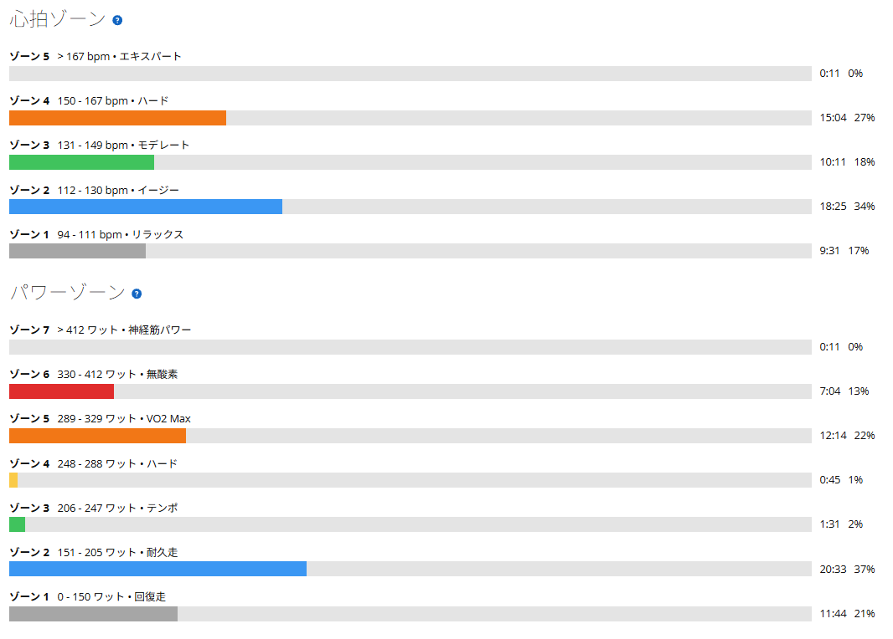
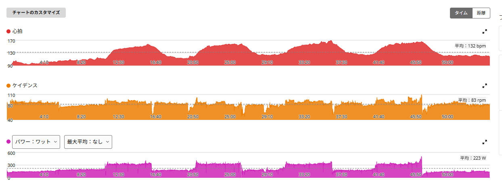

315W×5分×4本、完遂。身構えていたのに、最後に上げる余裕まであった
今日は本来、唐沢でゴルビーをやる予定だった。ただ、朝から雨。さすがに外は無理そうだったので、ローラーに変更した。
最近の課題は5分走。前回は315W前後で4本のところ、3本までは何とかこなしたものの4本目は約3分で終了。久しぶりにえづくくらいキツかった。なので今日は正直、始める前からかなり身構えていた。「またあれをやるのか……」。そんな感じだった。

54分04秒・NP259W・TSS79.3
- 全体28.43km / 54分04秒 / 平均223W / NP259W / IF0.942 / TSS79.3 / 運動量725kJ
- 心拍・回転平均132bpm / 最大170bpm / 平均83rpm
- メニューアップ約11分 → 315W前後×5分×4本（レスト約5分）→ クールダウン / FTP設定275W
今日の目的はシンプル。出力を欲張らず、315W付近で4本を最後まで揃えること。
316W → 318W → 317W → 322W。4本完遂
- 1本目316W
- 2本目318W
- 3本目317W
- 4本目322W（ラスト1分半で意図的に上げた）
315W×5分×4本、完遂。4本の平均は約318Wで、FTP275Wに対して約116％。75kg基準なら4.2W/kgである。
もちろん5分走なので楽ではない。心拍も上がるし、呼吸もキツい。ただ、前回みたいな「もう無理」という感じがなかなか来ない。1本目、2本目、3本目と終わっても、普通に次へ行ける。身構えていた分、少し拍子抜けした。

4本目、ラスト1分半から踏んでみた
4本目も315W前後で走っていたが、ラスト1分半くらいになっても割と余力が残っていた。そこで「これなら最後は踏めるだけ踏んでみよう」と出力を上げた。
その結果、4本目の平均は322W。限界ギリギリで何とか322Wになったのではなく、最後に意図的に上げてこの数字だった。ここは今日かなり意外だったところ。前回は4本目を完遂することすらできなかったのに、今回は最後に上げる余裕まであった。
ちなみに最大心拍は170bpmで、心拍ゾーン5に11秒だけ入っている。前回は最大163bpmで、「5分では心拍が上がりきる前に終わるのかもしれない」と書いていた。今日は最後に踏んだ分、そこまで上がった。余力があったから、心拍を上まで使えたとも言える。
前回と比べる
- 9月8日313W → 315W → 309W → 302W（3分で終了）/ パワーZ5以上16分35秒 / 最大心拍163bpm
- 今日316W → 318W → 317W → 322W（4本完遂）/ パワーZ5以上19分29秒 / 最大心拍170bpm
パワーゾーン5以上の時間も16分35秒から19分29秒へ。高強度側に置いた時間そのものが3分近く増えている。それでも今日の方が楽だった。
ついでに実走とも並べておく。8月8日の唐沢ゴルビーは5分×5本で323〜332W。前回はローラーの方が10W以上低い、と書いていた。今日の4本目322Wで、その差はだいぶ縮まってきた。
前回は条件が悪かった？
4日で急激に強くなったとは思っていない。前回は疲労や体調など、その日の条件があまり良くなかった可能性もありそうだ。もちろん練習の成果も少しずつ出ているとは思うが、同じようなメニューでも日によってここまで感覚が変わるのは面白い。
ただ、ここで一つ引っかかることがある。前回も今日も、前日はTSS100超えのSST20分×3だった。9月8日の前日は9月7日のSST（TSS102.5）、今日の前日は昨日のSST（TSS109.7）。条件だけ見れば、今日の方がむしろ前日は重い。「前回は疲れていた」だけでは、説明がつかない。
次は315W×5分×5本へ
当初は315W×4本を完遂したら、次は320W×4本に上げようかと考えていた。ただ、今日の余力を見ると、先に本数を増やした方が良さそうだ。
次の目標は315W×5分×5本。出力を上げるのではなく、5分走の合計時間を20分から25分へ伸ばす。1〜4本目は315W前後で揃えて、5本目まで余力があれば最後だけ上げる。これを完遂できれば、315Wでの5分走はかなり形になってきたと言えそうだ。
身構えていた分、拍子抜け
今日は前回の記憶があったので、かなり覚悟してローラーに乗った。でも終わってみれば4本完遂。最後には出力を上げる余裕まであった。キツいメニューをやるつもりで始めたのに、「あれ？今日はこれで終わり？」という感じ。こういう日もあるらしい。
とはいえ、次は5本。たぶん今度こそ5本目で地獄を見る気もする。ここが今の自分の境界なのか、それともまだ先まで行けるのか。次回、確認してみる。
その前に、明日はツール・ド・大那。こちらはレースではなくサイクリングなので、のんびり楽しんでくる。
次に見るポイント
- 5本目315W×5分×5本で、5本目まで揃えられるか。潰れるならどこで潰れるか
- 前日の影響SSTの翌日に5分走、という並びは2回とも同じ。結果が違った理由をもう少し観察する
- 実走との差ローラー322Wと実走ゴルビー323〜332Wの差が、さらに縮まるか